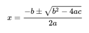

Uma equação do segundo grau cujos coeficientes sejam números reais ou complexos possui duas soluções, chamadas de raízes da equação. As raízes são dadas pela seguinte fórmula, conhecida no Brasil pelo nome de Fórmula de Bhaskara:
sendo 𝑎, 𝑏 e 𝑐 os mesmos coeficientes da equação do segundo grau, e o símbolo ± indicando que uma das soluções é obtida pela soma e a outra pela diferença entre os termos relacionados.
A partir desta fórmula, há três possibilidades da resolução da equação:
A Fórmula de Bhaskara é utilizada para determinar as raízes de uma equação quadrática. A fórmula recebe este nome, mas é conhecida em outros países simplesmente como a fórmula geral para resolução da equação polinomial de segundo grau, sem qualquer referência a Bhaskara, que foi um matemático e astrônomo indiano do século XII. Mesmo porque, a descoberta da fórmula normalmente é creditada aos babilônios antigos, e sua primeira formalização ao matemático persa Al-Khwarizmi.